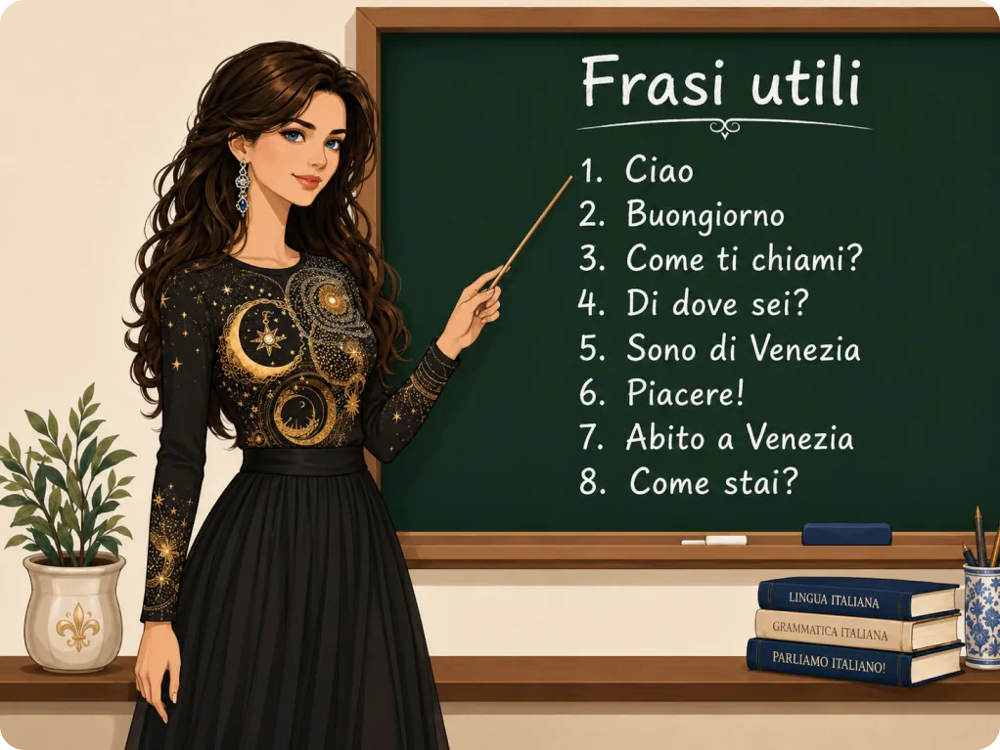
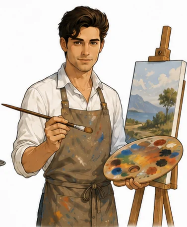
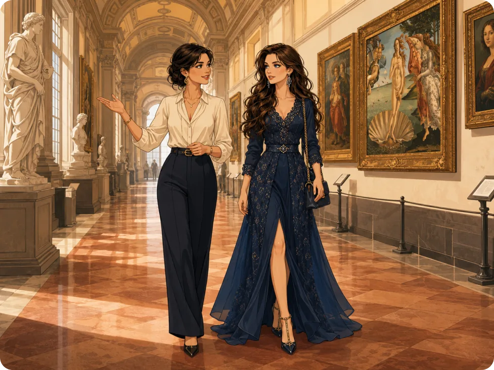
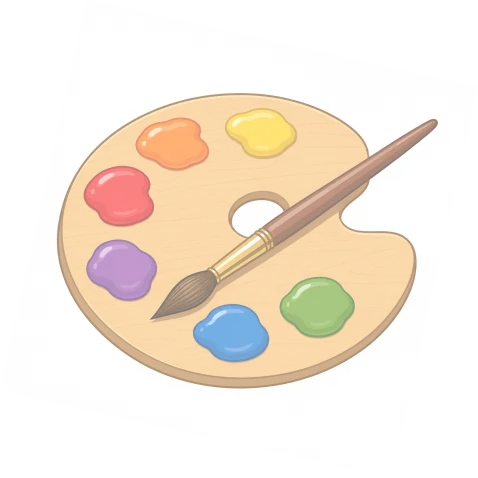
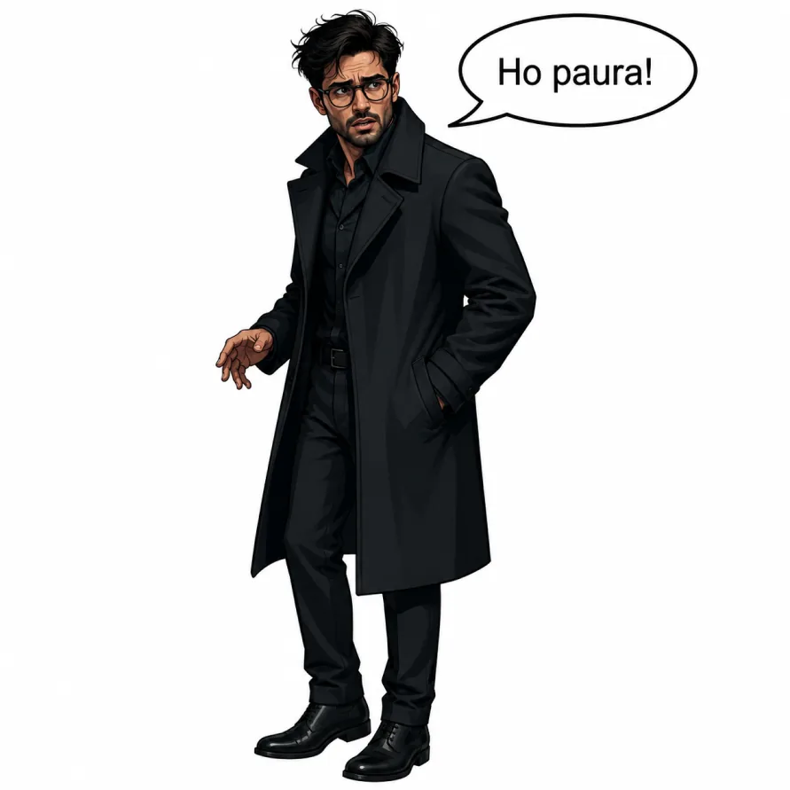
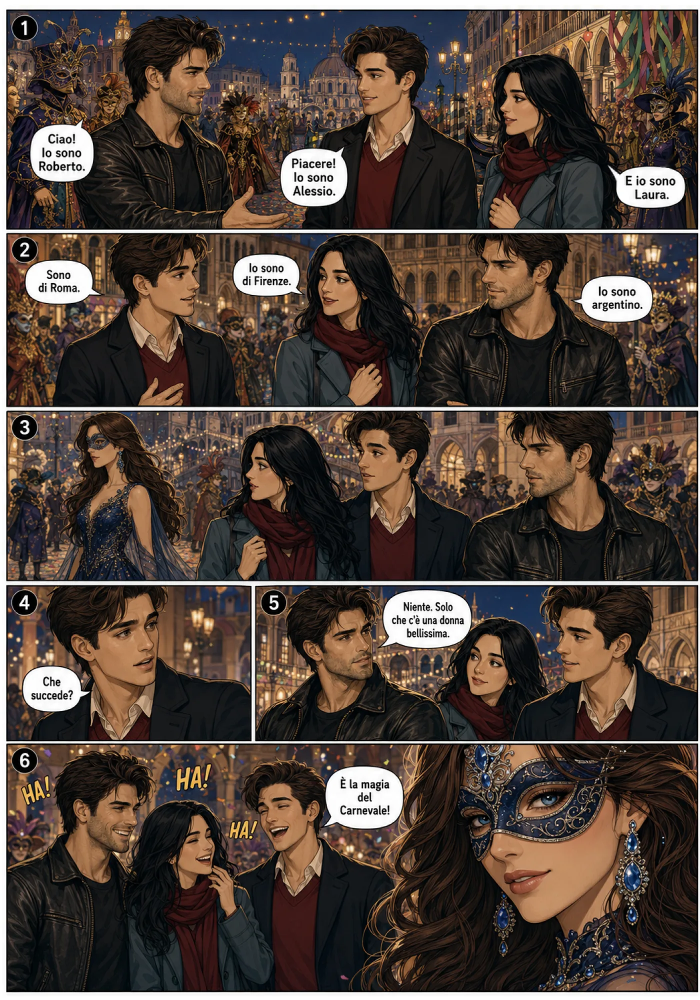

Ciao, amore! 1 · Italiano per stranieri
Unità 1 Buongiorno! Mi chiamo Roberto.
Impara a salutare e a presentarti: nome, provenienza, nazionalità, professione e città. Leggi i dialoghi, ascolta la pronuncia e controlla subito le tue risposte.
Roberto, dal romanzo Maschera di Venezia
Ogni angolo, ogni canale, racconta una storia.
AscoltaTocca l’altoparlante o le parole sottolineate per sentire la pronuncia italiana.
ControllaOgni esercizio ha il bottone «Controlla»: verde è giusto, rosso è da rivedere.
I tuoi progressiI cerchi in alto si riempiono quando completi gli esercizi. Restano salvati su questo dispositivo.
Buongiorno!
Roberto, Carlotta e Natalia si presentano. Leggi, ascolta e rispondi.
Leggi il testo
Mi chiamo Roberto
Ciao! Mi chiamo Roberto. Sono argentino, ma abito a Venezia. Sono archeologo e mi piace investigare i misteri della storia. Amo le città antiche, i musei e i documenti misteriosi. Ogni giorno studio il passato e cerco nuove scoperte. Venezia è una città bellissima e piena di segreti. Per questo mi piace vivere qui.
Parole importanti
Leggi e ascolta il dialogo
Roberto e Carlotta
Rispondi alle domande sul dialogo Scegli la risposta giusta.
Vero o falso?
Leggi e rispondi: Natalia si presenta
Ciao! Mi chiamo Natalia.
Sono veneziana e vivo a Venezia, una città antica, bella e piena di misteri. Amo Venezia con tutto il cuore. Amo i canali, le gondole, le maschere, i ponti e i tramonti romantici. Per me, Venezia non è solo una città: è la mia casa.
Sono una donna elegante, tranquilla e un po’ misteriosa. Ho duecento anni. Sì, 200 (duecento) anni. Ma il mio cuore è giovane, e ogni giorno guardo Venezia come se fosse la prima volta. Cammino per le strade strette, ascolto l’acqua dei canali e guardo le case antiche. Venezia vive dentro di me, e io vivo dentro Venezia.
Frasi utili: domanda e risposta Abbina ogni domanda alla risposta giusta.

Buongiorno, amore mio… oggi il sole sei tu.
Frase del giornoChe lavoro fai?
Le professioni e i luoghi di lavoro. Per dire la professione usiamo essere: Sono medico. Carlotta è guida d’arte.
Unisci ogni descrizione alla professione corretta

Unisci ogni professione al luogo di lavoro corretto
Lavora con un compagno Fai le domande e rispondi. Poi ascolta un esempio di Carlotta.
Domande per il compagno
Leggi le frasi e scrivi la professione corretta
Parla di un amico o di un’amica
Esempio
Il mio amico Paolo è pompiere. Lavora in una caserma dei pompieri. Il suo lavoro è importante. Paolo aiuta le persone.
Ora scrivi tu, sul quaderno o qui sotto: Il mio amico / La mia amica … è … Lavora … Il suo lavoro è … Lui / Lei …
Aiuto
Professioni: pompiere, medico, insegnante, guida d’arte, cuoco, musicista, fotografo, autista, farmacista, architetto.
Luoghi di lavoro: in una caserma dei pompieri, in un ospedale, in una scuola, in un museo, in un ristorante, in un teatro, in uno studio fotografico, in città, in una farmacia, in uno studio di architettura.
Parole utili: aiuta le persone, insegna agli studenti, prepara il cibo, fa fotografie, guida l’autobus, vende medicine, disegna case, spiega le opere d’arte.
Completa con essere o lavorare Dialogo: Che lavoro fai?
Il mio lavoro preferito? Amarti…
Frase del giornoLettere e numeri
L’alfabeto italiano ha 21 lettere. Tocca ogni lettera per sentire come si chiama.
Impara l’alfabeto italiano
Lettere straniere (in parole come jeans, kiwi, web, taxi, yogurt)
Leggi i testi
Le lettere e i suoni
In italiano molte parole si leggono come si scrivono. Però alcune lettere cambiano suono.
La C ha un suono duro davanti a a, o, u: casa, cosa, cucina. Davanti a e, i ha un suono dolce: cena, cinema. Con ch il suono è duro: che, chi.
La G funziona in modo simile. Ha un suono duro in gatto, gondola, guida e un suono dolce in gelato, giro. Con gh il suono è duro: spaghetti, ghiro.
La H non si pronuncia, ma è importante in che, chi, ghe, ghi. La Q si usa quasi sempre con u: quadro, questo, qui, quando.
La R è forte e chiara: Roma, Roberto, arte. La S può essere sorda o sonora: sole, scuola, casa, musica. La Z può avere un suono forte o dolce: pizza, ragazzo, zero, zaino.
Combinazioni di lettere
In italiano alcune combinazioni di lettere hanno un suono speciale. Ch si pronuncia come una c dura: chi, che, chiesa. Anche gh ha un suono duro: spaghetti.
La combinazione gn ha un suono dolce: gnocchi, bagno, signore. La combinazione gli è molto importante: famiglia, figlio, foglia.
Con sc il suono cambia. Davanti a e, i diventa dolce: scena, scimmia. Con sch il suono è duro: schema. Le combinazioni sce e sci si leggono con un suono dolce: pesce, scelta, sciare, uscita.
La doppia ss si pronuncia più forte: rosso, classe, interessante. Anche le doppie consonanti sono importanti: bella, notte, pizza, mamma. In italiano la consonante doppia si sente nella pronuncia.
Nomi italiani
In Italia ci sono molti nomi tradizionali e molto conosciuti. Per esempio, tra i nomi maschili troviamo Marco, Paolo, Luca, Giovanni, Francesco, Roberto, Franco, Giuseppe e Antonio. Tra i nomi femminili troviamo Laura, Anna, Maria, Giulia, Sofia, Francesca, Chiara, Elena e Carlotta.
Alcuni nomi sono classici e si usano da molti anni. Altri nomi sono più moderni o più popolari oggi. Per esempio, oggi molti bambini si chiamano Leonardo, Edoardo o Tommaso, e molte bambine si chiamano Sofia, Aurora o Ginevra.
Suono duro o suono dolce? Ascolta la parola e scegli.
Come si scrive? Ascolta le lettere e scrivi il nome.
Impara i numeri
Ascolta e scrivi il numero
Scrivi il numero in lettere
Leggi il dialogo: Agli Uffizi

Carlotta e Natalia
Vero o falso?
Quanti sono?
Uno, due, tre… ti amo!
Frase del giornoGrammatica
I verbi essere e avere e la frase negativa con non.
1. Il verbo essere
Usiamo essere per dire:
- nomeIo sono Roberto.
- nazionalitàLei è italiana.
- professioneCarlotta è guida d’arte.
- luogoNoi siamo a Venezia.
2. Il verbo avere
Usiamo avere per parlare di:
- etàNatalia ha 200 (duecento) anni.
- oggettiIo ho un libro.
- fame / seteLoro hanno fame.
- paura / tempoMarco ha paura. Non ho tempo.
| io | sono | |
| tu | sei | |
| lui / lei | è | |
| noi | siamo | |
| voi | siete | |
| loro | sono |
| io | ho | |
| tu | hai | |
| lui / lei | ha | |
| noi | abbiamo | |
| voi | avete | |
| loro | hanno |
Attenzione!
è (con l’accento) = verbo essere: Lei è italiana.
e (senza accento) = y: Roberto e Carlotta.
La h di ho, hai, ha, hanno non si pronuncia.
3. La frase negativa
In italiano, per fare una frase negativa usiamo non prima del verbo.
Con il verbo essere: Io non sono italiano. Tu non sei a Venezia.
Con il verbo avere: Io non ho fame. Tu non hai un libro. Roberto non ha tempo.

Completa con il verbo essere

Scegli: essere o avere?

Trasforma al negativo
Marco ha o non ha? Scegli la frase giusta per ogni immagine.
Io sono felice… perché ho te.
Frase del giornoCultura italiana
Un paese piccolo, ma molto ricco di cultura.
Leggi il testo e rispondi
L’Italia: un paese unico
L’Italia è un paese molto famoso nel mondo. È il paese della pizza, della pasta, del gelato e del buon caffè. Ma l’Italia non è solo cucina: è anche arte, storia, musica e bellezza.
In Italia c’è Roma, una città antica e importante. Ci sono monumenti famosi, musei, chiese, piazze e fontane. C’è anche Firenze, la città del Rinascimento, con opere d’arte bellissime. Ci sono Venezia, Milano, Napoli, Torino, Bologna e molte altre città interessanti.
L’italiano è una lingua musicale ed elegante. È la lingua di Dante, un grande poeta italiano. È anche la lingua dell’opera, della musica, dell’arte e dell’amore. Molte parole italiane sono famose in tutto il mondo: pizza, pasta, opera, bravo, ciao.
L’Italia è un paese piccolo, ma molto ricco di cultura. In ogni città c’è qualcosa di speciale. In ogni regione ci sono tradizioni, piatti tipici e storie diverse. Per questo l’Italia è un paese unico.
In quale città siamo? Guarda i monumenti e scegli la città.
Fumetti
Una sera di Carnevale in piazza San Marco. Roberto incontra Alessio e Laura… e una donna misteriosa.


Hai capito la storia?
Completa le battute
Note importanti
Il riassunto dell’unità e le parole da ricordare.
Sintesi dell’unità 1
In questa unità impariamo a salutare e a presentarci: nome, provenienza, nazionalità, età, professione e luogo di residenza. Studiamo l’alfabeto, i suoni dell’italiano e i numeri. Usiamo essere e avere al presente e formiamo frasi negative con non. I dialoghi e le letture ci avvicinano a Venezia, ai musei e alla cultura italiana.
Parole utili: saluti e prime frasi
Tocca una carta: senti la pronuncia e vedi la traduzione in russo.
La tua pagella
Il tuo miglior risultato in ogni sezione. Rifai gli esercizi quando vuoi per migliorare.